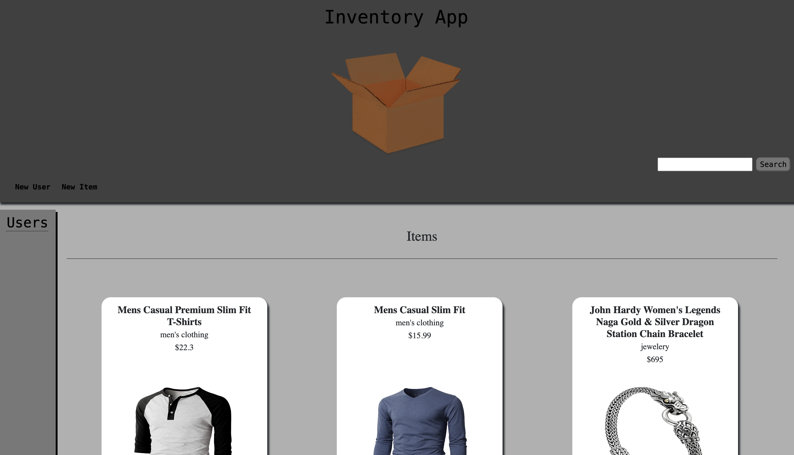

Inventory App
Description:
The inventory app project is a collaborative effort aimed at creating a robust platform for managing inventory items. It serves as a centralized system for users to add, update, delete, and search for items within their inventory. The project utilizes Node.js, Express.js, Sequelize, and React to provide a seamless and efficient user experience.
Languages and Technologies Used:
Node.js: The backend of the application is powered by Node.js, which provides the server-side environment for executing JavaScript code. Express.js: Used to create the RESTful API endpoints that handle various CRUD operations, such as retrieving, adding, updating, and deleting items. Sequelize: An ORM (Object-Relational Mapping) tool for Node.js, Sequelize is utilized to interact with the database, define models, and perform database operations. React: The frontend of the application is built using React, a JavaScript library for building user interfaces. React enables the creation of dynamic and interactive components for managing inventory items.
Key Features:
GitHub
CRUD Operations: The application allows users to perform CRUD (Create, Read, Update, Delete) operations on inventory items, providing flexibility and control over the inventory management process. Search Functionality: Users can search for specific items based on keywords or categories, enhancing the efficiency of inventory management. User Authentication: Implemented user authentication functionality to ensure secure access to the application, allowing only authorized users to perform CRUD operations. Responsive Design: Utilized responsive design principles to ensure the application is accessible and functional across various devices, including desktops, tablets, and mobile phones.

Movie App
Description:
The movie app project is a dynamic web application designed to provide users with access to a vast collection of movie information. Leveraging an API, the application fetches movie data based on user search queries and presents it in an intuitive and interactive interface. With features such as viewing movie details, searching for specific titles, and browsing through a carousel of movie posters, the app offers a comprehensive movie exploration experience.
Languages and Technologies Used:
JavaScript (ES6+): The primary programming language used for both frontend and backend development, JavaScript enables the implementation of interactive features and facilitates communication with the API. API Integration: The application integrates with a movie database API to retrieve movie information such as titles, release years, actors, and IMDb links.
Key Features:
GitHub
Deployed
Search Functionality: Users can enter search queries to discover movies matching their criteria. The application dynamically fetches and displays search results, providing a seamless browsing experience. Movie Carousel: A visually appealing carousel showcases movie posters, allowing users to scroll through a selection of movies and quickly access their details. View Movie Details: By clicking on a movie poster or using the "View Details" button, users can access detailed information about a specific movie, including its title, release year, cast, alternate titles, and IMDb links. Responsive Design: The application is designed with a responsive layout, ensuring compatibility across various devices and screen sizes, including desktops, tablets, and mobile phones.

Portfolio Project
Description:
My portfolio project is a showcase of my skills and expertise in web development and design. It serves as a platform to display my projects, experience, and abilities to potential clients and employers. The project is built using a combination of HTML, CSS, and possibly JavaScript to create a visually appealing and interactive user experience.
Languages and Technologies Used:
HTML: Used for structuring the content of the portfolio, including headings, paragraphs, and lists. CSS: Employed to style the layout, colors, fonts, and overall visual presentation of the portfolio. This includes customizing the appearance of navigation menus, headers, and project sections. JavaScript: Potentially utilized to add dynamic features such as image carousels, interactive elements, and animations. While the project may not heavily rely on JavaScript, it may incorporate it to enhance user engagement and functionality.
Key Features:
GitHub
Deployed
Responsive Design: Ensures that the portfolio looks and functions well across various devices, including desktops, tablets, and mobile phones. Image Carousel: Utilized to showcase project images in an engaging and interactive manner. The carousel may include features such as automatic scrolling, navigation buttons, and captions. Navigation Menu: Allows users to easily navigate between different sections of the portfolio, including projects, about me, contact information, and other relevant pages. Hover Effects: Potentially implemented to enhance interactivity and provide visual feedback when users interact with elements such as project images or navigation links.